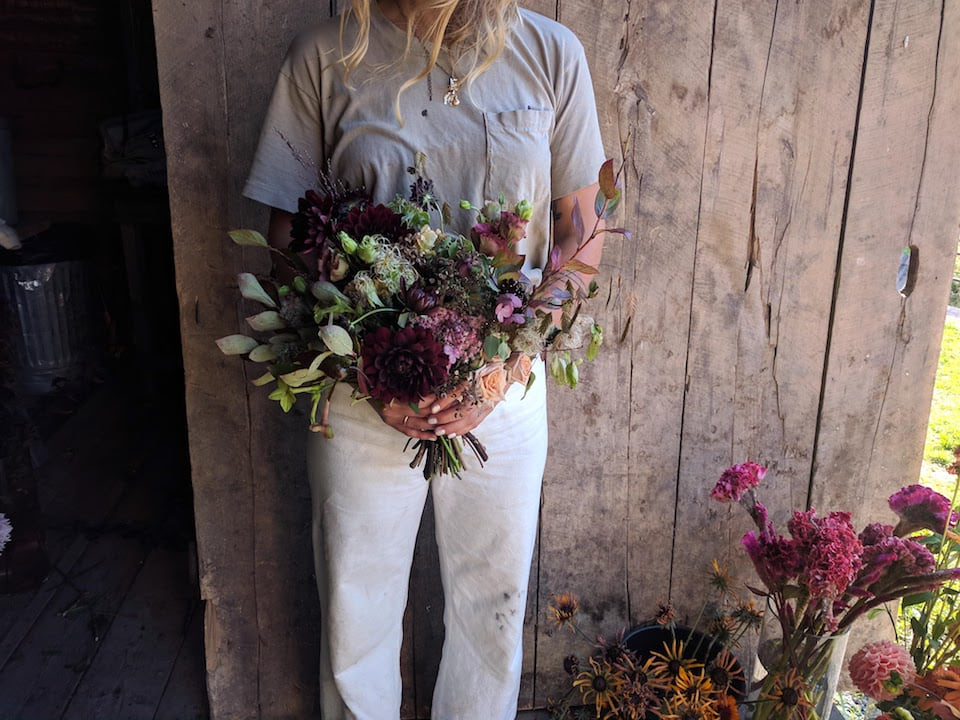
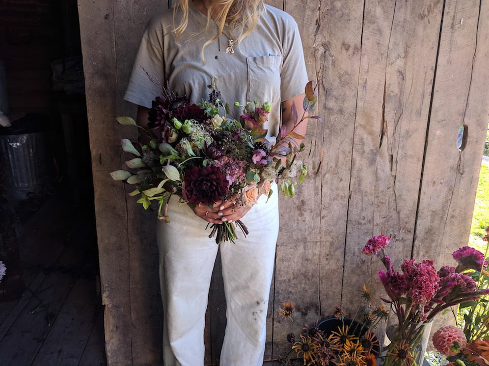
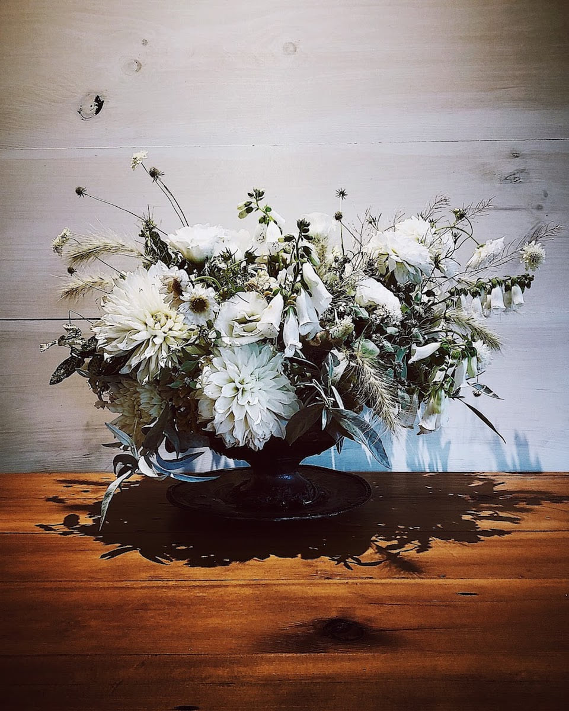
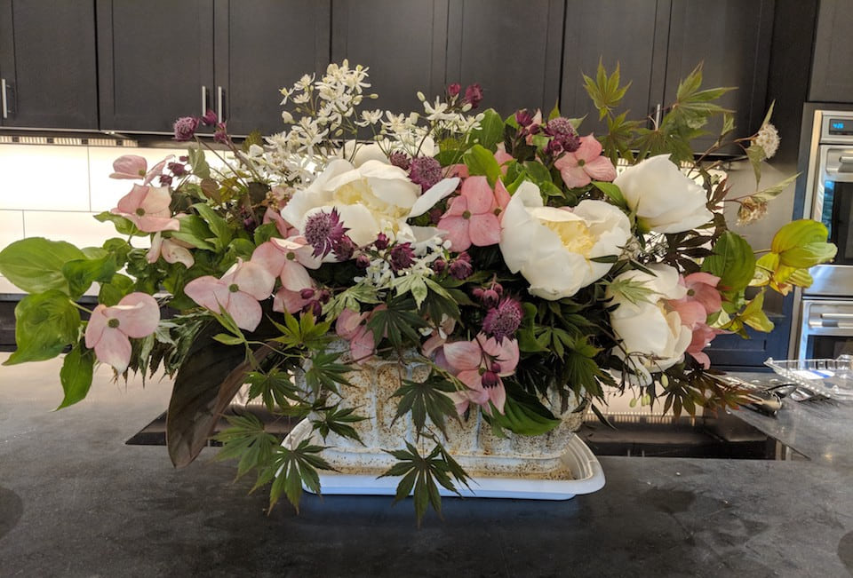
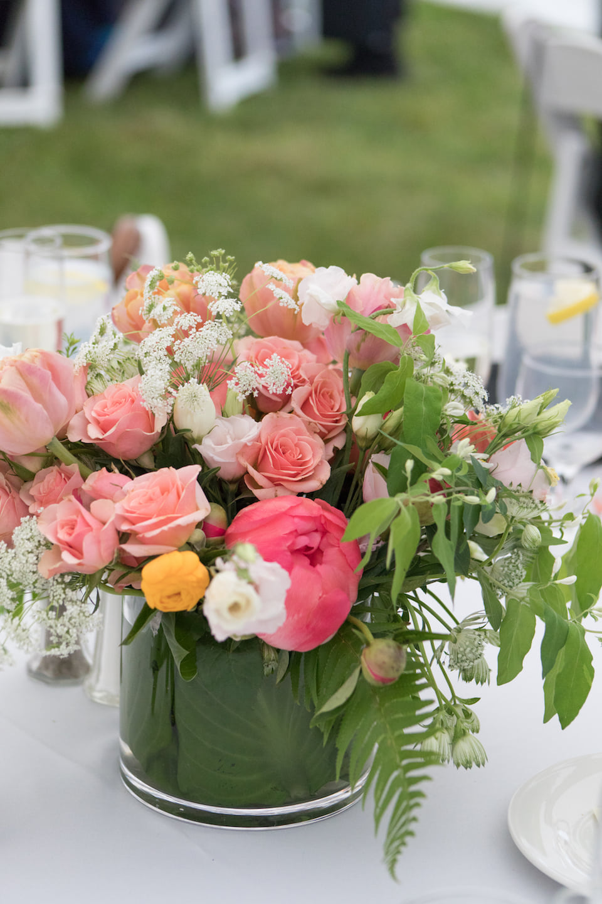
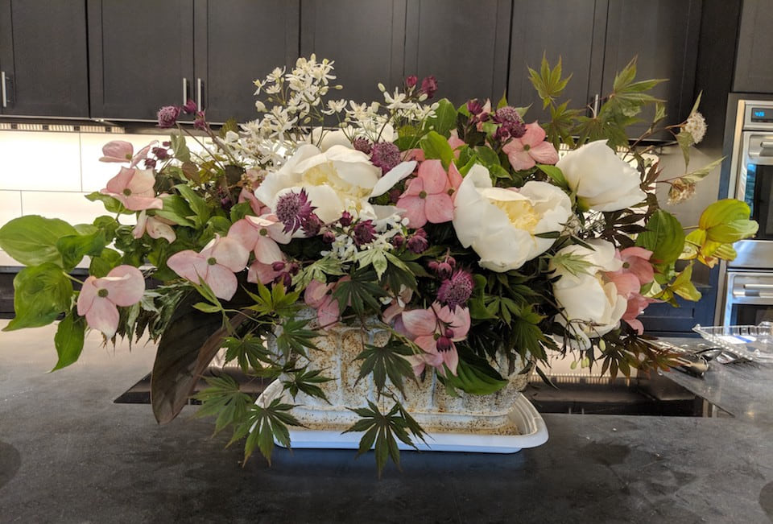
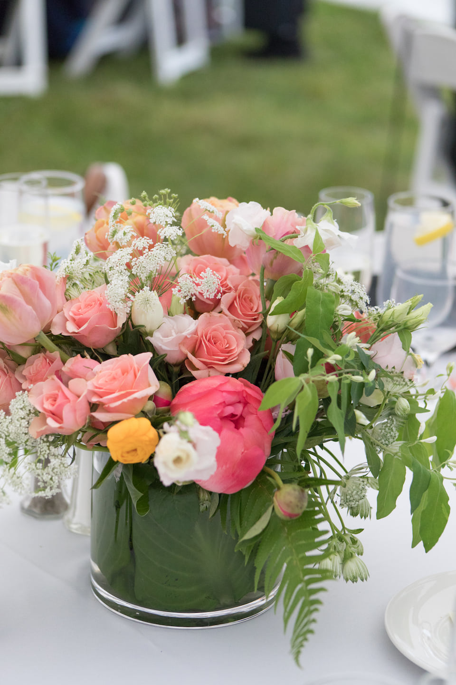
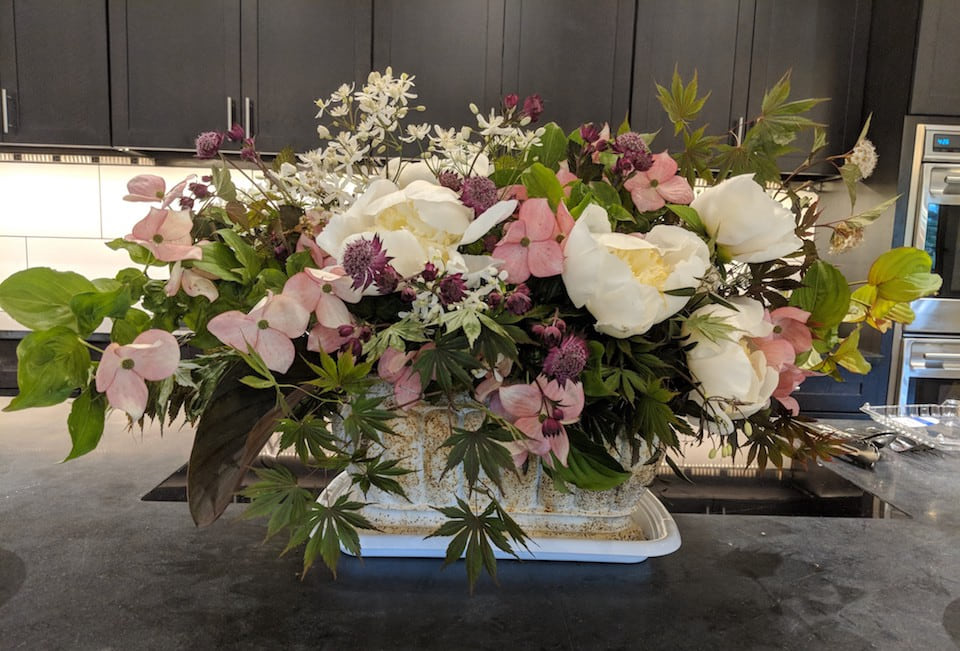
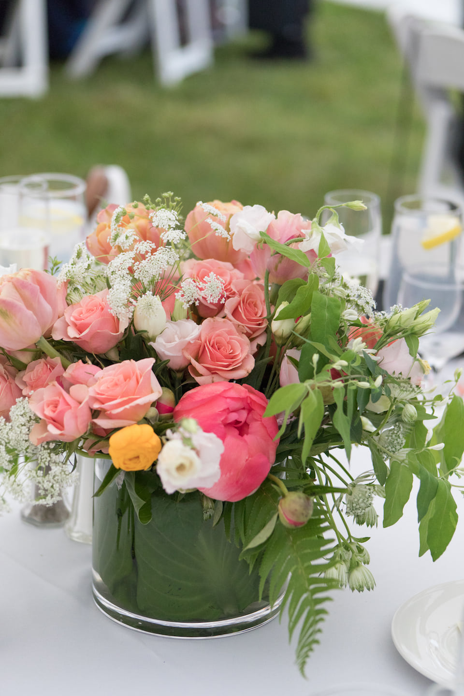

 








Hi! I’m Katarina, and I am a floral designer and gardener based in the Berkshires in western Massachusetts. For the past few years, I’ve been growing cut flowers and creating arrangements for weddings & events throughout the New England area. I currently work at The Berkshire Botanical Garden in Stockbridge, Ma.
For freelance and wedding inquiries, please get in touch with me at katarinagoldenberg@gmail.com or on instagram @ katarina__gold.